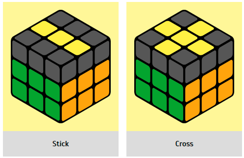

Whatever figure you have, we do FRU R' U' F' . In simple terms, F (bang-bang)
F' . Please note that if you have a "half cross", you need to hold it at 9 o'clock so that one
arrow looks to the left and the second one looks up. And if it's a stick, then hold it
horizontally and only then do the algorithm. If you initially had a dot, it will turn into a
half cross, if it was a half cross, they will turn into a stick, and if it was a stick, then
into a cross.
Attention!
If you have 1 or 3 elements looking up at the same time and you do not see any of the figures
shown, your cube could have been disassembled into parts and incorrectly assembled (accidentally
or as a joke). In this case, you will not assemble the cube according to the formulas. We
strongly recommend that you disassemble the cube into parts and assemble it by colors
mechanically.
Step 4. Assembling the last layer of the Rubik's cube
|  |
Yellow cross
|